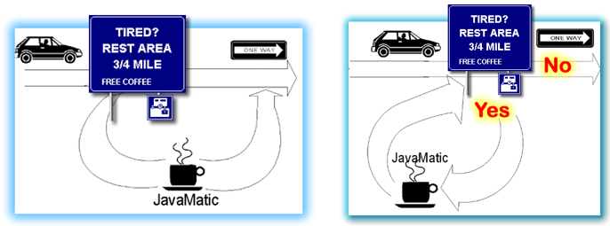

Introducing Loops
An old CS joke. Why did the Computer Science student starve to death in the shower? He was following the instructions on the bottle of shampoo. To really "get" the joke, you have to learn about iteration, a Computer Science term that means repeating a set of actions. Iteration is also called repetition or looping. The statements that are used in iteration are called loops. Let's start by comparing iteration to the if statement.
Both iteration and selection are flow-of-control statements; they control which code is executed inside your program.
- Like the if statement, iteration is based upon evaluating a Boolean—true/false—condition, and then performing a set of actions if the test is true, and skipping them if it is false.
- Both loops and if statements have a condition part, (the test), and a body part, (the actions that are taken).

Selection works like the illustration on the left. Driving down a highway, you come to a rest stop pull off. When you leave, you rejoin the highway further down the road. Once you rejoin the highway, you have no opportunity to go back, and revisit the rest stop again. Those who bypass the turnoff, skip the rest stop altogether.
A loop looks similar, but it not the same. The illustration on the right shows that there is still a test, but, after you've had your break, the exit road "loops back" (hence the name), and you rejoin the highway where you initially left it. If you like, you can choose to enter the rest stop once again, even though the highway is one-way. In this sense, a loop works a little like a cloverleaf interchange.
 This course content is offered under a
CC
Attribution Non-Commercial license. Content in this course
can be considered under this license unless otherwise noted.
This course content is offered under a
CC
Attribution Non-Commercial license. Content in this course
can be considered under this license unless otherwise noted.